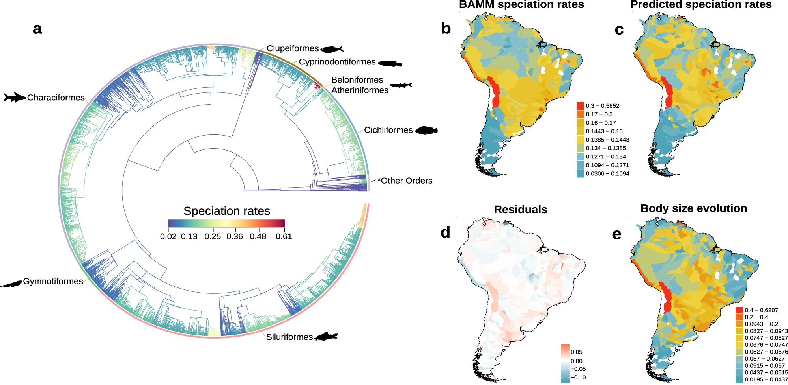
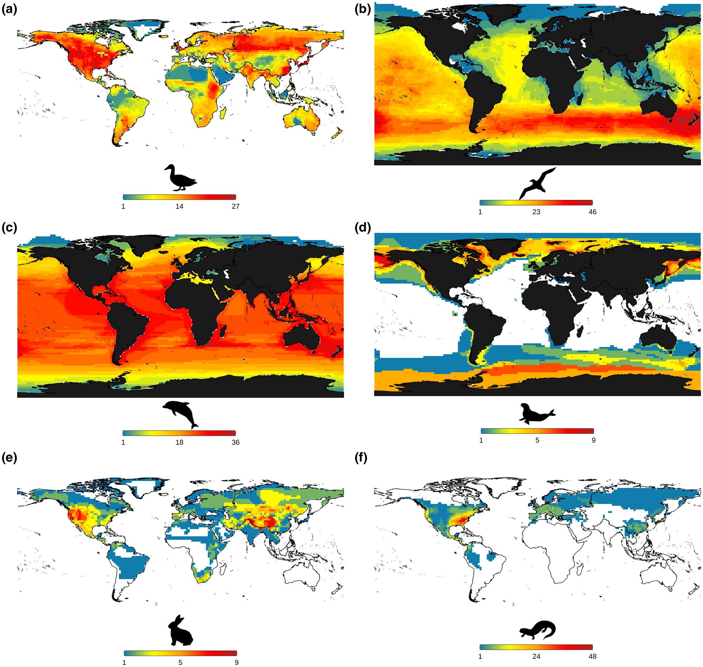
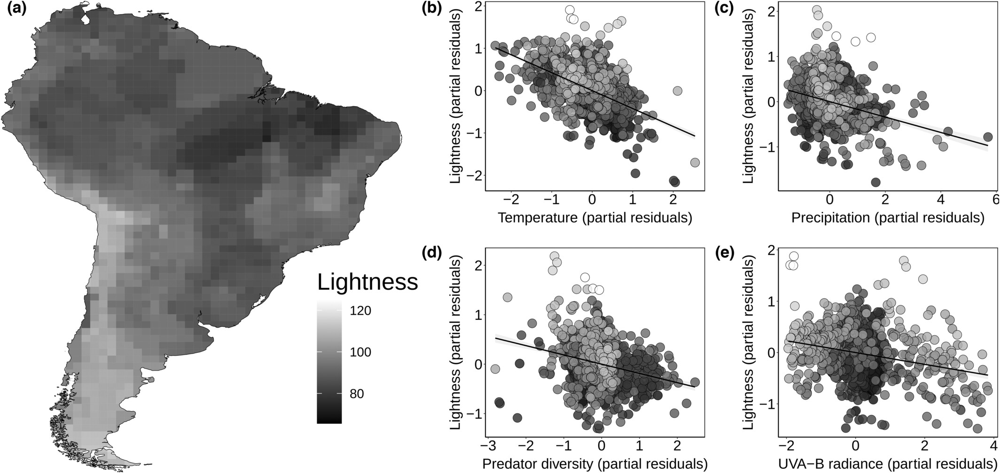

Why do some groups of organisms explode in diversity while others remain species-poor? This research investigates how the origin of new species varies across lineages, regions, and climates. By combining phylogenetic, ecological, and climatic approaches, I explore the evolutionary forces that govern the diversity of life on Earth.

Key publications
Why are some regions of the world far richer in species than others? This research investigates how ecological, evolutionary, and historical processes interact to shape global patterns of species richness across environments, regions, and lineages. By integrating macroecological and macroevolutionary perspectives, I aim to uncover the mechanisms that generate and maintain biodiversity gradients.

Key publications
From camouflage to communication, coloration plays many roles in the lives of animals. This research investigates how colour patterns evolve across mammals and what ecological and evolutionary forces shape their diversity. By studying the origins and functions of animal coloration, I aim to understand how traits evolve in response to changing environments and lifestyles.

Key publications